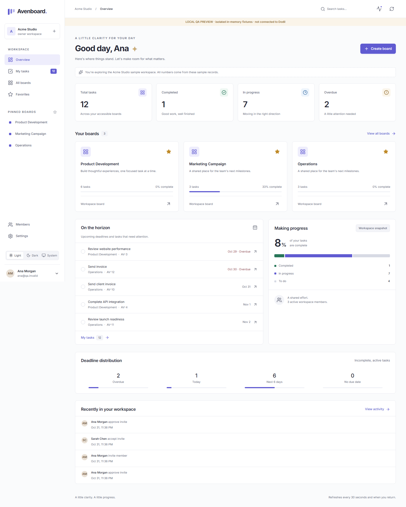
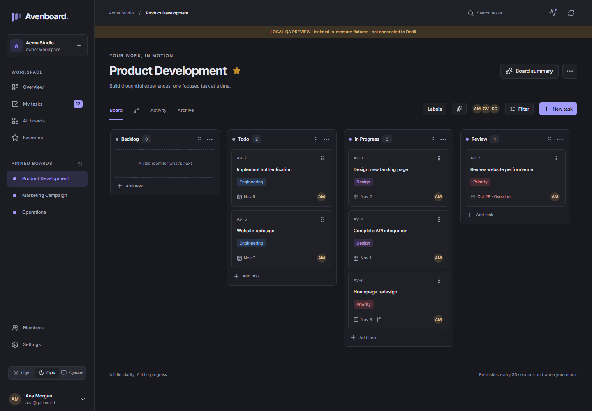
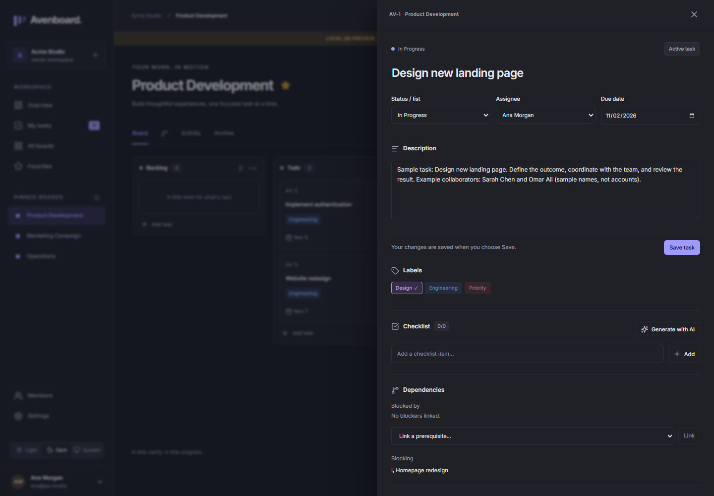
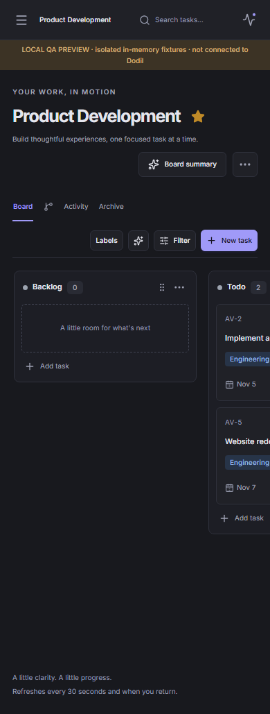
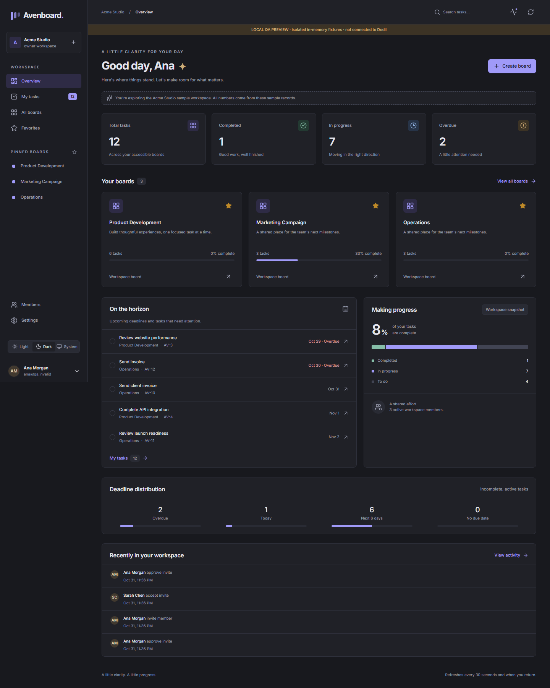

Organize work into lists, move cards, and see assignments and due dates at a glance.
A calmer place for team work
A little clarity.
A little clarity.
A little progress.
Avenboard brings project boards, task details, and team activity together in one focused workspace.

Overview · Light theme · DesktopSample workspace captured from local QA fixtures
One workspace, different ways to focus.
Move from a team overview to a board or a single task without losing the context around the work.




Built around the work itself.
Clear boards and useful details keep everyday planning close to the tasks that need attention.
Keep descriptions, labels, checklists, dependencies, and activity beside the task.
Bring together your tasks, upcoming deadlines, and recent workspace activity.
Preview details: this GitHub Pages site is a static visual preview. Its screenshots use sample QA fixtures. GitHub Pages does not host Avenboard’s FastAPI service, so sign-in, live workspace data, and MCP tools are not available here. The full app needs its backend deployed separately.